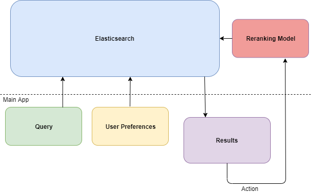

On this website you can find overview of my projects. If you want to get more information or see whole projects you can find here also
corresponding links to GitHub repos.

Research project for Econometrics & Statistics speciality. Title: Random forest for classification problems.
Project included three parts: application with Python, research paper and presentation presented at Uni Bonn.

The ongoing project at current work and in the same time future Master thesis at University of Bonn.

Bachelor thesis at SGH Warsaw School of Economics written in Polish. In this thesis I used many models for
time series such as: ARIMA, GARCH etc.
Bachelor thesis at Warsaw University of Technology written in Polish. Thesis included two parts:
prediction of traffic intensity and simulating traffic in the city.
Capstone project for certificate provided by IBM on coursera platform. Main
goal for the project: comparison of two capital cities Warsaw vs. Berlin
Project for Microeconometrics subject at Uni Bonn. Main goal: replication of the research paper written by Chief Economist at Google
Hal R. Varian plus addition of other methods not mentioned in the article.